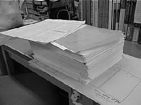
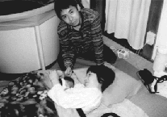
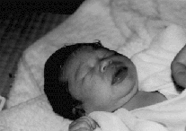

99.2.2（火）
・若干棚に溜まりだした動画をいち早く処理すべく、神村氏がトロトロへ動画作業のお願いに出向く。
・二木さん、安藤さん作打ち。
・またまた、深夜の制作会議。議題は、内線動画作監をいかに早くするか。議論は社員の一般常識から、ジブリの構造論にいたるまで、横道にそれまくるも、なんとか方向性をまとめて終了する。
・神村氏が2月から、制作データをマックからウィンドズの桐に一本化しているが、これがなかなか上手く行かず、悪戦苦闘している。
・その神村氏のスクリーンセーバーが、先月の「背水の陣」から「がけっぷち」に変わる。それを見た高畑監督は、それを渦巻き状にして「がけっぷちに嵐が来ています」と喜んでいた。ふ～…。
99.2.3（水）
・大塚伸治さん来社。シーン3-2、CUT79～83まで打ち合わせ。
・シーン2-1の色打ち合わせが、予定の時間をかなり遅れて行われる。原因は高畑監督と鈴木プロデューサーのトップ会談。
・高橋、神村両氏がメインスタッフを会議室に集め、主に実線作監、内線作監の作業をいかにスムースに進めていくかの話し合いを行う。実線作監の小西君から作画、色打ち合わせに出ている時間が惜しいので、注意点、決定事項は後から田辺氏に聞く事にして、打ち合わせには出ず、作業時間を増やしたいと提案があり了承される。
・昨日は節分。田辺さんに「まるかぶり」（昨年の同時期日誌参照）の話をすると「ああ、もう一年たったんですね～。」と遠い目をしていた。
99.2.4（木）
・ボードのカラーコピーを撮ろうと思ったら、出てきたコピーが何故かセピア色になっている。よく見てみると取り換えたばかりのフィルムの使用期限が二年も前に切れている。倉庫にあった古いものを、誰かがもったいないと思ったのか、フィルム置き場に持ってきたものらしい。
・制作では毎作品、ある部署からある部署へCUTが移動する際、必ずノートに日付や枚数をチェックしていくのだが、今回の作品では、徐々にその数が増え、コンテからプロジェクターによるラッシュまでで、チェックが64項目、ノート18冊分にものぼっている。デスク神村氏が増えすぎた項目をコンピュータ上で見やすく表にする作業に明け暮れている。
99.2.5（金）
・瀬山さんが来社し、高畑監督、高橋、古城、居村等と、今後の編集作業をどうしていくかについて話し合う。
・向かいに建設中である試写室の柱の立ち上げが行われていたが、屋根の形に組み上げられた木の骨組みをクレーンで立て、それを繋いで行く工事方法に、「あんなに簡単に組み上がっちゃうの」と唖然として作業を見ていたスタッフ多数。
・二日前にＴ２へデジタルペイントを発注する際、色見本のデータを入れ忘れ、ジブリ-Ｔ２間を二往復した石井君だが、今日ペイントが上がったと聞いて、再びＴ２へ向かい、１ＧＢのJAZを回収してきたところ、なんとケースの中身が空。「ちゃんと中身を確認してから持ってくること」と神村氏に注意を受け、再びＴ２へ。この１CUTで４往復。
99.2.6（土）
・百瀬さんと、ボブスレー編の今後の進行計画の話し合い。外注出しやむなし、との結論に達する。
・山森氏シーン2-4、2-5、5CUT分作打ち。
・山田氏シーン13-5、8CUT分作打ち。
・杉野さん来社。三月頭からディズニーから出向で原画として参加。
・1CUT780枚の動画が上がってくる。今作品の中では最高記録。でももっと多いのがあるという噂が…。

99.2.8（月）
・神村氏の知り合いの冨田さんが原画の手伝いに入ってくれることになり、作画打ち合わせ。ボブスレー編シーン2-2、7CUT分。
・コウノトリの資料を探しに新宿ツタヤに行くも、見つからず。結局社内でNHK「生きもの地球紀行」を録画していたスタッフからビデオを借りることに。
・居村氏が昨日床屋に行き、長く伸ばしていた髪とヒゲをバッサリと切って出勤。別人のように大変身。
99.2.9（火）
・朝9:30よりイマジカにてフィルムチェックが行われる。本編に関してはこれでほぼOKとなったが、ボブスレー編は色の問題で保留。
・七時より、糠塚さんや、コムスシフトさんのスタッフが来社し、のぼる、のの子役の打ち合わせ。高畑監督が、それぞれ事前に絞り込まれた十数名ずつのテープを聞き、のぼる7人、のの子5人に厳選。明日にもその声をアビッドに取り込み、絵と合わせ、さらに絞り込む作業を行う予定。
・山口さんの打ち合わせ。シーン7-9、CUT13から最後まで。
99.2.10（水）
・シーン15-6、13-7の色打ち合わせが行われる。
・神村氏が三度目になるCUT表の書き直しを完了させる。「これで最後までいけるはず」と自信を見せているが果たしてそう上手く行くかどうか。
・古城君が昨日選考された声をアビッド上で絵に合成、一通り高畑監督に見てもらう。まだ結論は出ず。
・矢野顕子さんの作曲した音楽が何曲かテープで送られてくる。早速高畑監督に聞いてもらう。
・アニメージュ等で発表された次期○ンダ○のデザインが社内で論議を呼んでいる。早速みんな紙に模写しては「これじゃヒゲだよ…」等々白熱した議論を展開中。
・近所の飲み屋がランチを始めたのだが、1000円で分厚いステーキが食える（しかも抜群に美味い）とあって早速ジブリで話題になっている。ところで最近NHKスペシャル「世紀を越えて」を見て「肉はあまり食べてはいけない」等と言い回っていた某田中氏が率先して食べに行ったため、批判を浴びている。
99.2.11（木）
・午後から雪が降り出す。あっという間に外は一面銀世界。駐車場の車の上も白く雪が積もり始める。「おお、このままいけば中央線も止まり帰れなくなる。今のうちに帰ろう」との不逞の輩が何人かいたが、そう言った途端に雪もやみ、今日も深夜までお仕事。
99.2.12（金）
・先日行われた健康診断の結果が出る。メイン、制作の中では特に大きな病気にかかった人も無く、ほっと一安心。昨年直腸に異変あり、と診断され、○○に管を通し、バリウムを○○されるという屈辱的な二次検査を強いられた某氏も今回はA判定。
・本編の○○○シーンの参考に、実際のダンスをビデオに収録することになり、吉祥寺のダンススクールへ打ち合わせに行く。スタジオは、自分の踊っている姿が見られるように片側が鏡張りになっていて、歩くだけで思わず背筋を伸ばしてしまう。打ち合わせの最中も踊りのレッスンをしている人がいて、ついついそちらを見てしまうのは「Shall we ダンス？」を見ているからか。とりあえず来週火曜日に高畑監督立ち会いのもと、プロのダンサーに踊ってもらい、それをビデオ三台で収録する予定。
99.2.13（土）
・シーン4-3色打ち合わせ。
・三時からラッシュチェックが行われる。
・原画の森田さんから、初の子供（男の子）が誕生したと連絡が入る。早速近所の人たちが助産院に泊まり込んでいる森田さんの机の周りを「おめでとう」と飾り付ける。
99.2.15（月）
・朝から森田氏が赤ちゃんの写真をもって出勤。机の飾り付けに感動している。一日中赤ちゃんの写真を周りの人に見せまくり「かわいいでしょう。早くみんなも子供作った方が良いよ」と終始目尻を下げっぱなし。


・今年はバレンタインが日曜だったため、今日15日に会社中で義理チョコが溢れかえっている。
・百瀬さん体調不良で今日はお休み。
・今日は色打ち合わせの予定日であったが、ボードと動画上がりがなかなか合わずお流れ。
99.2.16（火）
・吉祥寺にあるダンススクールへ資料映像の収録にうかがう。
・百瀬さんが描いているボブスレー編絵コンテのうち7CUT 84.125秒分が終了する。残りは2シーンを残すのみ。
99.2.17（水）
・デスク神村氏が動画スタッフに、月一回回収している作業ノートを返却する際、一人一人を会議室に呼んで過去の上がり状況等を見せ「死ぬ気で描いてくれ」と最後のお願い。
・先週は作打ちが多くあった為、レイアウトは数多く上がったが原画の上がりがいまいち。うって変わって今週は原画が怒涛のごとく上がってきている。
・神村氏のウィンドウズマシンがクラッシュ。
・シーン14-3の色打ち合わせが行われる。問題もなく数分で終了。
・門屋さんと高畑監督が、のぼる役をさらに絞り込む作業を行う。結果、本命４人補欠２人となる。これらのメンバーの声を若林さんにきちんと録音してもらって最終決定に持っていく予定。
99.2.18（木）
・昨日から踊りのシーンの資料用にビデオレンタル屋のはしご。夜、選び出したいくつかの映像を高畑監督に見てもらう。
・神村氏のウインドウズの調子が全く良くならないため、完全に初期化し、一からやり直しをはかっている。
・神村氏は京都アニメの出向としてジブリに来ているので、近くにマンションを借りて住んでいるが、京都から突然「アニメを勉強している若者をあずかってくれ」との連絡とともに、オーストリア人が上京、マンションに居候をすることになる
99.2.19（金）
・12時から、若林さん、井上さん、伊藤さんが来社し、音響打ち合わせが行われる。まず出来上がっているライカリールを見てもらい、今回の音響をシステムも含めて6チャンネルをどう使っていくのか、という全体像が話し合われる。その後、絵の作業の遅れてからくる、音響作業のスケジュールについて、例えば、どの時点で定尺が必要なのか（なるべく後に延ばしたい高畑監督との戦いになる）、等具体的なことが話し合われる。
・7時からテレセンにてのぼる、のの子役候補者の録音が行われる。稲城、門屋両名が立ち会う。
99.2.20（土）
・4時からラッシュチェックが行われる。そこで一時は決着がついたと思われていたプロジェクターの色問題が再び再燃。各方面で頭を抱える者続出。
・今月は、内輪動画強化月間。そのせいもあるがここ数日内線輪郭線動画の流れが凄い。20カット程一気に流れている。更にラフ原画の上がりも27カットとかなりアップ（と言いつつも映画を終わらせるためにはまだ少ないけど）している。制作としてはそこそこ嬉しい。と神村氏。しかし宮崎監督がよく言っていた「安心するな」を肝に銘じつつ映画が完成するまで緊張感を維持しなければ。
・昨日に引き続きのぼる、のの子役候補の録音が行われる。終了後すぐにDATをジブリに持ち帰り、昨日分も含め、アビッドで絵と合わせ高畑監督に見てもらう。結果、最終決定は月曜日にもう一度みてからということになるが、高畑監督の考えはほぼ固まる。
99.2.22（月）
・朝11時から制作会議が行われる。相変わらず暗い話題ばかり。
・アビッドにて、土曜日から寝かせていたのぼる、のの子役の声をもう一度高畑監督に聞いてもらう。土曜日と考えは変わらず。鈴木プロデューサーが一日出っ放しなので、報告がてら明日朝一に二人の声を聴いてもらうことに。
・夜12時ごろ、ちょうど帰り際東小金井駅に着いた古城君から、またしても人身事故が起こりダイヤがめちゃくちゃ、との連絡が入る。12時過ぎに帰ろうとしていた何人かがそれによる遅れに引っ掛かる。それにしても古城君が遅く帰る度に中央線のダイヤが乱れているような気がする…。
99.2.23（火）
・制作石井君が、11歳のころ集英社のある作家にファンレターを出したところ、ジャンプコミックスに写真入りで紹介されたことを告白。早速居村氏が近くの古本屋でその本を手に入れ、コピーしたページを貼り出していた。
・4月には新人が入社してくるが、各部署とも人の入るスペースが非常に少ない。高橋、川端、神村氏らと机のレイアウトを考える会議が行われる。それにしても狭い…。
99.2.24（水）
・最近すっかり演助状態で帰りが午前様になっていた居村氏がついに風邪でダウン。と言いつつ、ものが溜まっているため出社を強要。でもつらそうなので処理が終わったら早く帰ってもらうことに。
・昨日、日本テレビで放映された映画「シ○○ア○○急」を見た人間がかなり多かったのだが、時間も遅かったので、ある場所で終わったと思いどんでん返しのラストを見ずに寝てしまった人も多く、ラストシーンについての議論がかみ合わない。それにしてもこんなに議論が盛り上がった映画は久しぶりか。
99.2.25（木）
・新宿ツタヤにて、○○○の資料用ビデオ漁り。ピックアップして高畑監督に見せたところ「今までの中でこれが一番参考になりますね」との感想。
・門屋さんにお願いして日本テレビのライブラリーからスズメバチの資料を入手。
・原画の割り振りと今後のスケジュールについての確認の話し合いが行われる。
・今週ラフ原画が、コンスタントに１日６～７カット上がっている。この調子で行くと過去最高の上がり数になる！？。
99.2.26（金）
・倉田さん作打ち。シーン7-8、4CUT分。
・昨日この調子なら最高の上がりに…と書いたら今日は２CUTしか上がってこない。書かなきゃ良かった…。
・内線動画が予想以上に上がってくるため、実線動画上がりの供給が間に合わなくなってきている。美術のボードがある程度出来たところで内線作業に入れるよう、美術の二人と相談。
・神村、居村両氏が久しぶりに三鷹の某牛丼屋へ行ったところ、620円で「しゃぶしゃぶ」のメニューが。試しに注文してみたところ、なんとコンロと鍋まで出てくる本格派。二人はジブリに帰って来てからも興奮さめやらぬ感じであったが、余り安くし過ぎてつぶれないよう祈るばかり。
・稲城さんがクラシックパートの音楽録音のためチェコへ出発。いいなーと思ったら機内泊を入れて三泊四日のスケジュール。これはつらい。
99.2.27（土）
・ラッシュチェックが行われる。
・コミックボックス三好氏が、スイスで日本学を学びながら、アニメーション作品のディストリビューターをしているスイス人青年を連れて来社。日本語も話せるし、日本のアニメの事もよく知っている。
・予告編に使う1CUT1360枚のCUTが、動画チェックを終え仕上げへ降りる。
・明日は床掃除により午後までジブリが使えないため、原画マン数人が朝四時位までお仕事。
| 次のページへ |
| 日誌索引へ戻る |